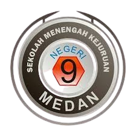

Aplikasi Inventaris QR
Sistem peminjaman alat laboratorium berbasis web responsif dengan pemindai QR Code.

 RPL SMKN 9 MEDAN
RPL SMKN 9 MEDAN
Sistem peminjaman alat laboratorium berbasis web responsif dengan pemindai QR Code.
Platform ujian berbasis komputer yang adaptif pada desktop lab maupun smartphone.
Etalase digital karya kreatif siswa jurusan Rekayasa Perangkat Lunak.
Aplikasi kasir berbasis web untuk mencatat transaksi dan mencetak struk penjualan.
Situs informasi sekolah yang menampilkan jurusan, galeri, dan berita terbaru.
Permainan belajar interaktif untuk melatih logika pemrograman dasar siswa.
SMK Negeri 9 Medan menerapkan Kurikulum Merdeka (Kurikulum Nasional) yang diselaraskan dengan standar kebutuhan Dunia Usaha dan Dunia Industri (DU/DI) sebagai Sekolah Pusat Keunggulan.
Kurikulum dirancang menggunakan metode Teaching Factory serta kelas industri (seperti Kelas Axioo untuk jurusan TKJ) agar siswa terbiasa dengan standar kerja profesional.
Sekolah secara aktif mengintegrasikan perangkat ajar Koding dan Kecerdasan Artifisial (AI) serta pembelajaran berbasis projek (seperti Projek IPAS).
Siswa dibekali uji kompetensi melalui LSP SMKN 9 Medan yang terlisensi Badan Nasional Sertifikasi Profesi (BNSP) untuk memperoleh sertifikat keahlian resmi sebelum lulus.
Kegiatan belajar mengajar berlangsung selama 5 hari kerja (Senin–Jumat) dalam sehari penuh.
Isi halaman Karya Siswa akan diisi nanti.
Isi halaman Kontak akan diisi nanti.
Isi halaman Jadwal Praktikum akan diisi nanti.
Isi halaman Modul Pemrograman Web akan diisi nanti.
Isi halaman Daftar Lab RPL akan diisi nanti.
Isi halaman Info PKL & LSP akan diisi nanti.